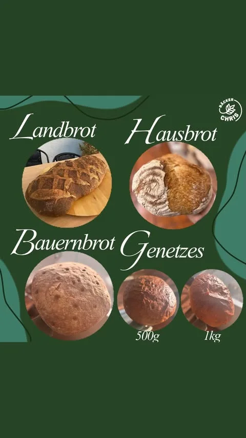
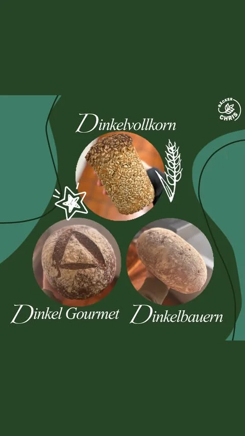
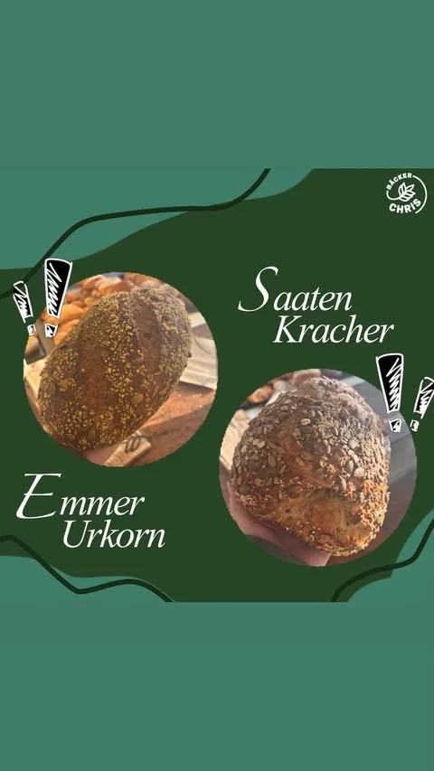
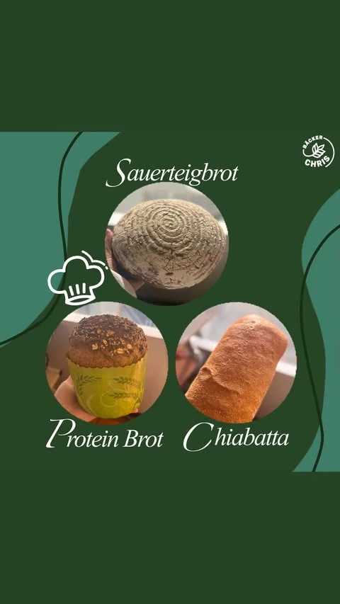
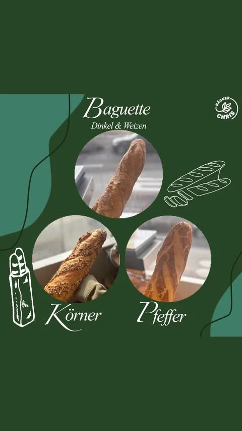

Zwei Orte.
Ein Handwerk.
Von der Backstube in der Welzheimer Straße bis zum neuen Café am Pflegecampus: Bäcker Chris backt seit 2023 nach einer einzigen Regel. Der Teig bekommt genügend Zeit.


Eine kleine Vorstellungsrunde
Fünf Familien von Broten, die bei uns täglich aus dem Ofen kommen.

Bauern- und Landbrote
Rustikal, kräftig ausgebacken: Landbrot, Hausbrot, Bauernbrot und Genetzes, dazu das Roggenbauernbrot in 750 g und 1 kg. Lange Teigführung, kräftige Kruste.

Dinkelbrote
Dinkelvollkorn, Dinkel Gourmet und Dinkelbauern, dazu Dunkles Dinkelvollkorn, Alpenlaib aus Dinkel Ruch Mehl und Buttermilch Laib. Für den vollen Geschmack.

Kern- und Saatenbrote
Der Saatenkracher mit Quellstück und reichlich Saaten ist unser Bestseller, dazu Emmer Urkorn, Dreikorn und Sechskorn. Kräftig, mit viel Biss.

Spezialbrote
Sauerteigbrot, Protein Brot und Chiabatta, für besondere Ansprüche.

Baguettes
Baguette Dinkel & Weizen, Baguette Körner und Baguette Pfeffer, knusprig frisch gebacken. Dazu Brezeln, süße Teilchen und Kuchen im ganzen Sortiment.
„Der Teig bekommt, was er braucht: Zeit."
Keine Abkürzungen, kein Zeitdruck: Seit der Übernahme durch Christian und Tina Schiefer 2023 backt Bäcker Chris nach diesem einen Grundsatz, den schon die Familie Lochmann drei Generationen lang gepflegt hat.
Lange Teigführung braucht Geduld, dafür schmeckt man sie in jeder Kruste. Mehr über unsere Geschichte
Aktuelle Angebote & Saisongebäck
Dieser Kasten ist bewusst leicht austauschbar gebaut, ideal für Wochenangebote und Saisongebäck wie die Neujahrsbrezel.
Bäckerei Welzheimer Straße
Die Ursprungs-Backstube, heute bekannt als „der Bäcker neben dem Kino".

„Super Angebot, Super Qualität, alles in allem Tipp-Top."